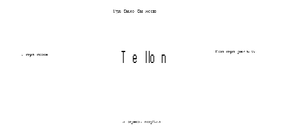

Программирование
JavaScript изначально создавался для того, чтобы сделать web-странички «живыми». Программы на этом языке называются скриптами. В браузере они подключаются напрямую к HTML и, как только загружается страничка – тут же выполняются.
Программы на JavaScript – обычный текст. Они не требуют какой-то специальной подготовки.
В этом плане JavaScript сильно отличается от другого языка, который называется Java, не путайте пожалуйста.
Когда создавался язык JavaScript, у него изначально было другое название: «LiveScript». Но тогда был очень популярен язык Java, и маркетологи решили, что схожее название сделает новый язык более популярным. Этот сайт тоже был сделан с использованием js. Тут всё держится на божьей помощи и готово рухнуть в любой момент.
Например поиск который тут когда-то был мог найти слово только если оно лежит в меню или в заголовоке. Парящий Муми - тролль сделан с использованием таймеров, но вряд ли кто-либо это заметит.
А еще главная страница могла выглядеть вот так:

Ничего не видно, поверьте все в порядке.